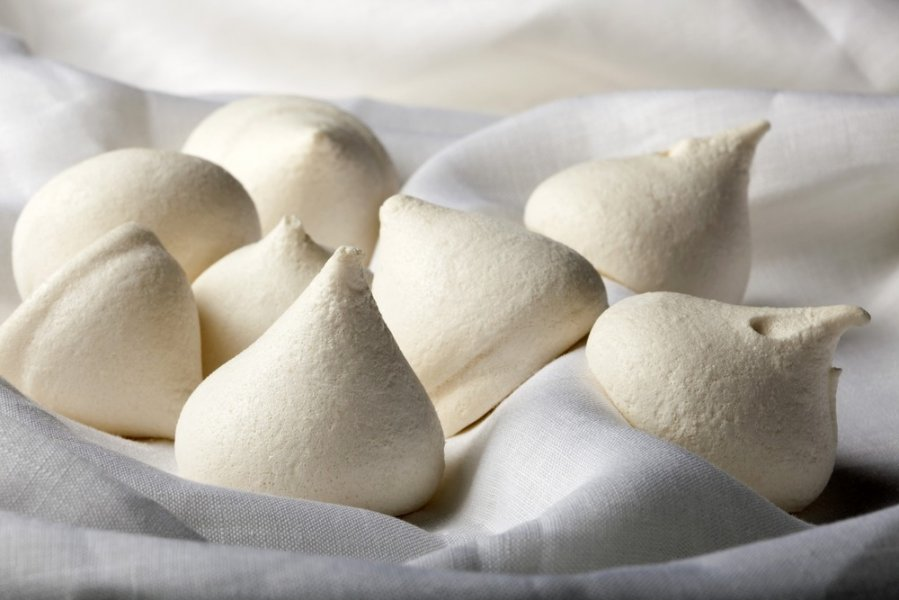
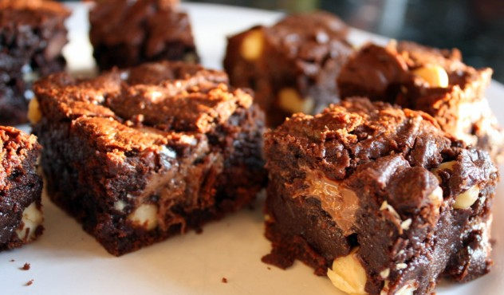
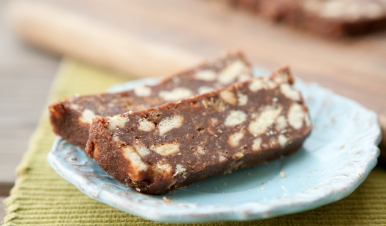

Dažnai norisi pagaminti skanų ledų desertą šeimai ar nustebinti svečius skaniais keksiukais, tačiau kepinių receptai atrodo painūs, teksto kratinyje sunku rasti reikiamą informaciją. Žemiau pateikti receptai puikiai tinka artėjančių švenčių laikotarpiui, kadangi pagaminami lengvai bei greitai, be to yra be galo skanūs!
Receptai:
| Morenginiai sausainiai | Braunis | Tinginys |
|---|---|---|
|  |  |  |
| Patarimai, kaip nesuklysti gaminant patiekalą pagal receptą! Spauskite čia! |
Greta Pangonytė IIb